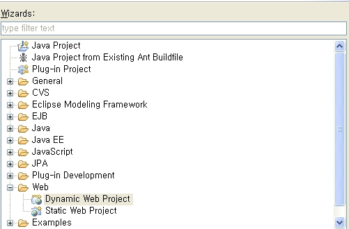
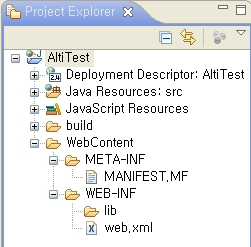
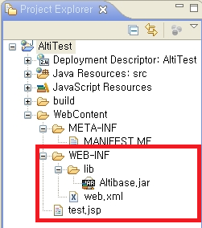
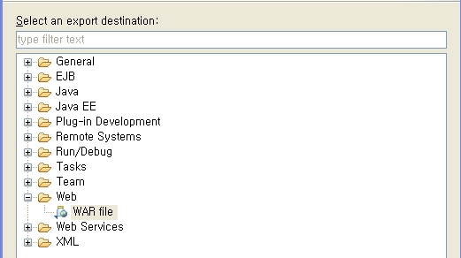
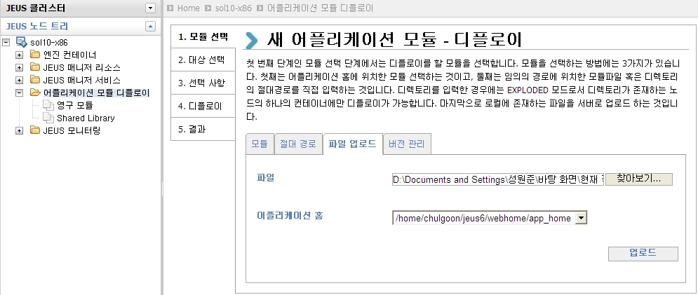
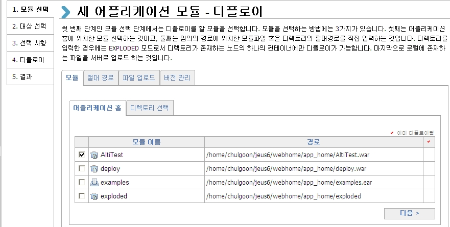

After learning how to integrate ALTIBASE with JEUS, check the integration between ALTIBASE and JEUS by accessing and querying Altibase using the node setting below.
Example of using pool
<%@ page import="javax.naming.*" %>
<%@ page import="java.sql.*" %>
<%@ page import="javax.sql.*" %>
<%
Connection con=null;
Statement st=null;
ResultSet rs=null;
try
{
InitialContext ctx = new InitialContext();
DataSource ds = (DataSource)ctx.lookup("DataSource1");
con=ds.getConnection();
st=con.createStatement();
rs=st.executeQuery("select * from dual");
while(rs.next())
{
out.println("TABLE_NAME :" + rs.getString(1)+"<br>");
}
}
catch(Exception e)
{
out.println("Error:" + e.getMessage());
e.printStackTrace();
}
finally
{
if(rs!=null)rs.close();
if(st!=null)st.close();
if(con!=null)con.close();
}
%>
Example of using getConnection
<%@ page import="java.util.*"%>
<%@ page import="java.sql.*"%>
<%
Connection conn = null;
PreparedStatement pstmt = null;
ResultSet rs = null;
String db_url = "jdbc:Altibase://127.0.0.1:20300/mydb";
String db_user = "sys";
String db_passwd = "manager";
String enc = "KO16KSC5601";
Properties props = new Properties();
props.put("user", db_user);
props.put("password", db_passwd);
props.put("encoding", enc);
try {
try {
Class.forName("Altibase.jdbc.driver.AltibaseDriver");
conn = DriverManager.getConnection(db_url, props);
out.print(" Connection ok" + "<br>" );
} catch (Exception e) {
out.println("### CONN ERROR=>" + e.toString() + "###" + "<br>");
}
String Query = "select * from dual";
pstmt = conn.prepareStatement(Query);
String get_1 = null;
try {
rs = pstmt.executeQuery();
while(rs.next()) {
get_1 = rs.getString(1);
out.println(" get_1 = " + get_1 + "<br>");
}
} catch (Exception e) {
out.println("### SELECT ERROR=>" + e.toString() + "###" + "<br>");
}
} catch (Exception e) {
out.println("### ERROR=>" + e.toString() + "###" + "<br>");
try {
conn.rollback();
} catch(Exception ex) {
out.println("### rollback ERROR=>" + ex.toString() + "###" + "<br>");
} // end of try
} finally {
try {
conn.close();
} catch(Exception ex) {
out.println("### close ERROR=>" + ex.toString() + "###" + "<br>");
} // end of try
} // end of try
%>
How to run
This section describes how to test after deploying the JSP file using WebAdmin.
Deployment refers to all operations to upload and control module files in JEUS to start the application service.
JEUS can upload and deploy EJB modules (.jar files), web application modules (.war files), resource adapter modules (.rar files), and the standalone module composed of one module can also be deployed as a type of Java EE application. In the sample test, it describes how to create a WAR file using the examples provided above and deploy it to a JEUS server to run it.
To learn how to upload and deploy other modules, please refer to the "Deployment" section of the JEUS manual.
The WAR file used in the sample test was created using Eclipse.
1. Run Eclipse and select File New Project, then select Web “Dynamic Web Project” in the following wizard to set the project name.

2. When the project is created as the following, create the sample example above as a JSP file and add it under the “WebContent” directory.
Then, add Altibase.jar file to the Lib folder.

3. After adding the JSP file and Altibase.jar file, select File Export, select Web “War file”, and specify the path to create, then the WAR file is created.

4. When the WAR file is created, select the “Application Module Deployment” File Upload tab in the WebAdmin node tree to upload the corresponding WAR file.

5. After uploading the file, deploy the uploaded module. The name of the deployed module (the name of the WAR file) becomes the path to run the example file.

6. When the deployment is completed, open the Internet window and enter the following URL to run it.
http://server_ip:8088/module name/jsp file name Ex) http://192.168.1.76:8088/AltiTest/test.jsp
{kind=link}
{kind=link}
{kind=link}
{kind=link}
{kind=link}
{kind=link}